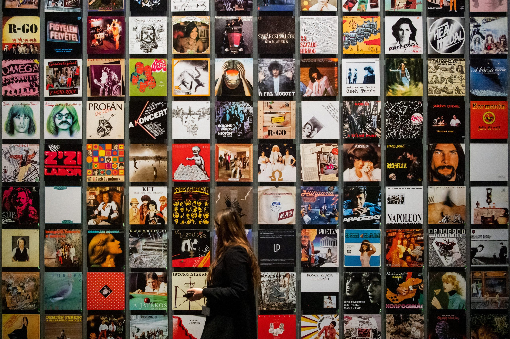

O Pop é um gênero popular originado no EUA e Reino Unido na década de 50. É um estilo bem eclético que muitas vezes introduz referência de outros estilos como rock, música latina, country e entre outros. A estrutura é simples normalmente seguindo o padrão de “verso – refrão – verso”, trazendo melodia e sendo executada de uma maneira sensível. No Brasil não tem nenhum marco que mostrei o inicio desse estilo no nosso país, mas conseguimos observar em em meados dos anos 80/90 foi quando os artistas e bandas brasileiras começaram a introduzir os elementos do pop em suas canções.


Sandy
Ótimas indicações, a música "Satellite" passa uma mensagem muito profunda, adora essa canção. 😊
5/5